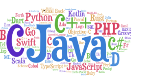

programming languages main page:
links
introduction
.

A programming language is a computer language programmers use to develop software programs, scripts, or other sets of instructions for computers to execute.
Although many languages share similarities, each has its own syntax. Once a programmer learns the languages rules, syntax, and structure, they write the source
code in a text editor or IDE. Then, the programmer often compiles the code into machine language that can be understood by the computer. Scripting languages,
which do not require a compiler, use an interpreter to execute the script.Programming languages and computer coding have made life simpler for us. Whether it’s
automobiles, banks, home appliances, or hospitals, every aspect of our lives depends on codes. No wonder, coding is one of the core skills required by most
well-paying jobs today. Coding skills are especially of value in the IT, data analytics, research, web designing, and engineering segments.